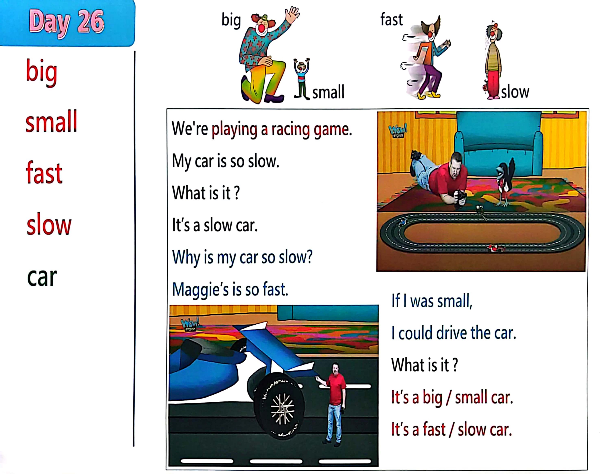

Day 26
Unit 8 · story
教材重点
教材重点依据网盘文件“第二级蓝色每日打卡全.pdf”，第 27 页对应 Day 26；保留文字整理并同时提供原图。
网盘教材重点原图 · PDF 第 27 页对应 Day 26
big small fast slow car big small fast slow We're playing a racing game. My car i s so slow. What i s i t ? I t’s a slow car. Why i s my car so slow? Maggie’s i s so fast. I f I was small, I could drive the car. Can you make me small ? What i s it ? I t’s a big / small car. I t’s a fast / slow car.

Unit 8 · story · 4–6岁
car · big · small · hello
Hello, hello, hello, hello, everyone. Hello. Hello.
台词本为机器转写，可能存在识别误差；不等同于视频逐字原声。
详细内容
Part 1 核心词汇
必须掌握 · 4 个Part 2 跟读句型与句型拓展
左侧保留台词本原句，右侧为替换练习；拓展内容不是视频逐字台词。
Hello, hello, hello, hello, everyone. Hello. Hello.
Everyone travel everywhere?
Everyone say, hello. Everyone.
Big, small, fast and slow.
Why is my car so slow And Walker, maggie is so.
Part 3 台词本全文
来源：第2级台词本 · 026.Wow!Blue - Unit 8 - part 1 story_8_1.pdf。以下保留网盘 PDF 的机器转写文本，仅清理了文件路径页眉和空行。
Hello, hello, hello, hello, everyone. Hello. Hello.
Everyone travel everywhere?
Everyone say, hello. Everyone.
Big, small, fast and slow.
Oh,
Why is my car so slow And Walker, maggie is so.
Oh,
We're playing a racing game. Look, my car is so.
Look, here comes my car. That was this man in his car.
Is car again. Why is Maggie's car so fast? Oh, here comes my car.
What is it it with me It's a snow, again, it's a snow.
The last time.
Okay, maggie, well, turn you win. Why is my car so slow.
Wait a minute if I was small.
I could drive the car and make it go really fast. HA, HA, but I need some Maggie magic.
Maggie, maggie, yes, steve, can you make me small please make me really small, please.
A bracado brown.
I'm so small.
But now I can drive my car. Look at that.
What is it Is it my car.
But it's so big.
It's a big car, look, some say with me, come on, what is it.
It's a big car, and again,
It's a big car, one more time.
It's a big car, it's too big for me, though.
Maggie.
Don't be naughty, make me big again. I want to be big.
Hey, what happened Look at me, I'm big. I'm.
Very big home. Maggie.
Are you being naughty again? Oh, and what's that What is it? Oh, look.
/
-
/2/026.Wow!Blue - Unit 8 - part 1 story_8_1.txt[2022/3/29
星期二
6:42:42]
It's my car. It's so small, is it a big car? No,
It's a small car, so say it with me, come on, what is it.
It's a small car, and again,
It's a small car.
Come on, it's a small car. Last time it's a school car, it's too small for me.
Oh, maggie, I want to drive my racing car, okay?
Great, look at me now I'm not too big, I'm not too small.
And I hope this car is not too slow. Let's find out, ready, steady, go.
Is it a slow car? No, what is it.
It's.
Say with me. Come on.
And again, it's a fast one more time. It's a.
Ah, yeah, so see you next time, wife and help. Bye bye.
e